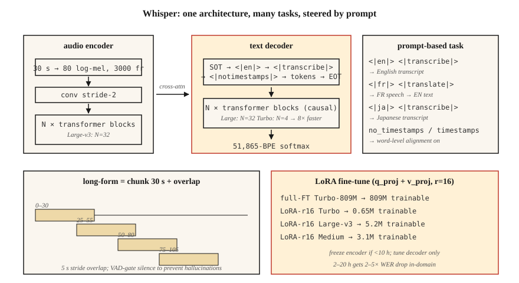

Whisper — Architecture & Fine-Tuning
Whisper is a 30-second-window transformer encoder-decoder, trained on 680k hours of multilingual weakly-supervised audio-text pairs. One architecture, multiple tasks, robust across 99 languages. The 2026 reference ASR.
- Type
- Build
- Languages
- Python
- Prerequisites
- Phase 6 · 04 (ASR), Phase 5 · 10 (Attention), Phase 7 · 05 (Full Transformer)
- Time
- ~75 minutes
#The Problem
Whisper, released by OpenAI in September 2022, was the first ASR model to ship as a commodity: paste audio, get text, 99 languages, robust to noise, runs on a laptop. By 2024 OpenAI had shipped Large-v3 and Turbo variants; by 2026, Whisper is the default baseline for everything from podcast transcription to voice assistants to YouTube subtitles.
But Whisper is not a pipeline you can treat as a black box forever. Domain shift kills it — technical jargon, speaker accents, proper nouns, short clips, silence. You need to know:
- What it actually is inside.
- How to give it chunked, streaming, or long-form audio correctly.
- When to fine-tune and how.
#The Concept

Architecture. Standard transformer encoder-decoder.
- Input: 30-second log-mel spectrogram, 80 mels, 10 ms hop → 3000 frames. Clips shorter are zero-padded, clips longer are chunked.
- Encoder: conv-downsample (stride 2) +
Ntransformer blocks. For Large-v3: 32 layers, 1280-dim, 20 heads. - Decoder:
Ntransformer blocks with causal self-attn + cross-attn to encoder output. Same size as encoder. - Output: BPE tokens over a 51,865-token vocab.
Large-v3 has 1.55B params. Turbo uses a 4-layer decoder (from 32), cutting latency 8× with a <1% WER hit.
The prompt format. Whisper is a multitask model steered by special tokens in the decoder prompt:
<|startoftranscript|><|en|><|transcribe|><|notimestamps|> Hello world.<|endoftext|><|en|>— language tag; forces translation-vs-transcription behavior.<|transcribe|>or<|translate|>— translate English output from any-language input, or verbatim.<|notimestamps|>— skip word-level timestamps (faster).
The prompt is what lets one model do many tasks. Change <|en|> to <|fr|> and it transcribes French.
30-second window. Everything is pinned to 30 seconds. Longer clips need chunking; shorter clips are padded. Windows are not streamed natively — this is why WhisperX, Whisper-Streaming, and faster-whisper exist.
Log-mel normalization. (log_mel - mean) / std where the stats come from Whisper's own training corpus. You must use Whisper's preprocessing (whisper.audio.log_mel_spectrogram), not librosa.feature.melspectrogram.
#Variants in 2026
| Variant | Params | Latency (A100) | WER (LibriSpeech-clean) |
|---|---|---|---|
| Tiny | 39M | 1× realtime | 5.4% |
| Base | 74M | 1× | 4.1% |
| Small | 244M | 1× | 3.0% |
| Medium | 769M | 1× | 2.7% |
| Large-v3 | 1.55B | 2× | 1.8% |
| Large-v3-turbo | 809M | 8× | 1.58% |
| Whisper-Streaming (2024) | 1.55B | streaming | 2.0% |
#Fine-tuning
Canonical workflow in 2026:
- Collect 10–100 hours of target-domain audio with aligned transcripts.
- Run
transformers.Seq2SeqTrainerwithgenerate_with_losscallback. - Parameter-efficient: LoRA on
q_proj,k_proj,v_projof attention layers reduces GPU memory 4× with <0.3 WER cost. - Freeze the encoder if you have <10 hours. Only tune the decoder.
- Use Whisper's own tokenizer and prompt format; never swap tokenizers.
Community results: fine-tuning Medium on 20 hours of medical dictation drops WER from 12% to 4.5% on medical vocabulary. Fine-tuning Turbo on 4 hours of Icelandic drops WER from 18% to 6%.
#Build It
#Step 1: run Whisper out of the box
import whisper
model = whisper.load_model("large-v3-turbo")
result = model.transcribe(
"clip.wav",
language="en",
task="transcribe",
temperature=0.0,
condition_on_previous_text=False, # prevents runaway repetition
)
print(result["text"])
for seg in result["segments"]:
print(f"[{seg['start']:.2f}–{seg['end']:.2f}] {seg['text']}")Key defaults you should always override: temperature=0.0 (sampling defaults to 0.0 → 0.2 → 0.4 … fallback chain), condition_on_previous_text=False (prevents the cascading hallucination problem), and no_speech_threshold=0.6 (silence detection).
#Step 2: chunked long-form
# whisperx is the 2026 reference for long-form with word-level timestamps
import whisperx
model = whisperx.load_model("large-v3-turbo", device="cuda", compute_type="float16")
segments = model.transcribe("1hour.mp3", batch_size=16, chunk_size=30)WhisperX adds (1) Silero VAD gating, (2) word-level alignment via wav2vec 2.0, (3) diarization via pyannote.audio. The 2026 workhorse for production transcription.
#Step 3: fine-tune with LoRA
from transformers import WhisperForConditionalGeneration, WhisperProcessor
from peft import LoraConfig, get_peft_model
model = WhisperForConditionalGeneration.from_pretrained("openai/whisper-large-v3-turbo")
lora = LoraConfig(
r=16, lora_alpha=32, target_modules=["q_proj", "v_proj"],
lora_dropout=0.1, bias="none", task_type="SEQ_2_SEQ_LM",
)
model = get_peft_model(model, lora)
# model.print_trainable_parameters() -> ~3M trainable / 809M totalThen standard Trainer loop. Checkpoint every 1000 steps. Evaluate with WER on held-out.
#Step 4: inspect what each layer learns
# Grab cross-attention weights during decode to see what the decoder attends to.
with torch.inference_mode():
out = model.generate(
input_features=features,
return_dict_in_generate=True,
output_attentions=True,
)
# out.cross_attentions: layer × head × step × src_lenVisualize with a heatmap — you will see diagonal alignment as decoder steps scan through encoder frames. That diagonal is Whisper's notion of word timestamps.
#Use It
The 2026 stack:
| Situation | Pick |
|---|---|
| General English, offline | Large-v3-turbo via whisperx |
| Mobile / edge | Whisper-Tiny quantized (int8) or Moonshine |
| Multilingual long-form | Large-v3 via whisperx + diarization |
| Low-resource language | Fine-tune Medium or Turbo with LoRA |
| Streaming (2 s latency) | Whisper-Streaming or Parakeet-TDT |
| Word-level timestamps | WhisperX (forced alignment via wav2vec 2.0) |
faster-whisper (CTranslate2 backend) is the fastest CPU+GPU inference runtime in 2026 — 4× faster than vanilla with identical output.
#Pitfalls that still ship in 2026
- Hallucinated text on silence. Whisper trained on captions includes "Thanks for watching!", "Subscribe!", song lyrics. Always VAD-gate before calling.
condition_on_previous_textcascade. One hallucination pollutes subsequent windows. SetFalseunless you need fluency across chunks.- Short-clip padding. A 2-second clip padded to 30 seconds can hallucinate in the trailing silence. Use
pad=Falseor VAD-gate. - Wrong mel stats. Using librosa's mels instead of Whisper's produces near-random output. Use
whisper.audio.log_mel_spectrogram.
#Ship It
Save as outputs/skill-whisper-tuner.md. Design a Whisper fine-tune or inference pipeline for a given domain.
#Exercises
- Easy. Run
code/main.py. It tokenizes a Whisper-style prompt, computes decoded shape budgets, and prints the chunk schedule for a 10-minute clip. - Medium. Install
faster-whisper, transcribe a 10-minute podcast, compare WER against a human transcript. Trylanguage="auto"vs forcedlanguage="en". - Hard. Using HF
datasets, pick a language Whisper struggles with (e.g., Urdu), fine-tune Medium with LoRA for 2 epochs on 2 hours, and report WER delta.
#Key Terms
| Term | What people say | What it actually means |
|---|---|---|
| 30-sec window | Whisper's limit | Hard input cap; chunk longer audio. |
| SOT | Start-of-transcript | <|startoftranscript|> kicks off the decoder prompt. |
| Timestamps token | Temporal alignment | Every 0.02 s offset is a special token in the 51k vocab. |
| Turbo | The fast variant | 4-decoder layers, 8× faster, <1% WER regression. |
| WhisperX | The long-form wrapper | VAD + Whisper + wav2vec alignment + diarization. |
| LoRA fine-tune | Efficient tuning | Add low-rank adapters to attention; train ~0.3% of params. |
| Hallucination | The silent failure | Whisper produces fluent English from noise/silence. |
#Further Reading
- Radford et al. (2022). Whisper paper — the original architecture and training recipe.
- OpenAI (2024). Whisper Large-v3-turbo release — 4-layer decoder, 8× speedup.
- Bain et al. (2023). WhisperX — long-form, word-aligned, diarized.
- Systran — faster-whisper repo — CTranslate2-backed, 4× faster.
- HuggingFace — Whisper fine-tune tutorial — canonical LoRA / full-FT walkthrough.
Nice. That's 2 minutes of Speech & Audio behind you.
Continue to Speaker Recognition & Verification →